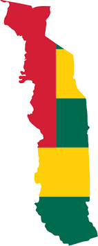

le togo est un pays de l afrique de l'ouest.Couvrant une superficie de 56785km,elle s'etire sur environ 700km2 du nord o sud avec une largueur n'excedent pas 150km. il est limité au nord par le BURKINA FASO,au sud par L'OCEAN ATLANTIQUE,a l'est par le BENIN,et a l'ouest par le GHANA.Elle est subdivisé en 5 region:
novembre a fevrier periode de saison séche est ideale pour votre sejour au TOGO. «WOEZON»ainsi vous accueillerons les togolais
partant du sud la region maritime:plage de sable fin bordé de cocotier et les attractions q'offre la capitale avec ses musés,ses monuments et de grande hotels aménagé pour votre confort. visiter lome
la region des plateaux nous laisse decouvrir sa plus importante ville de KPALIME qui se situe à environ 120 kilomètres de Lomé la capitale, elle se trouve au centre de la région du café et du cacao. La zone qui entoure la ville est luxuriante et fertile, encerclée par des collines aux bois épais, des vallées profondes et des petits villages paysans. Le paysage reste toujours vert même pendant la saison sèche en raison de l'abondance des cours d'eau. nous povons visite des lieux comme la CASCADE DE KPIME belle cascade pas tres loin de la route,vous découvrirez aussi des bâtiments coloniaux datant de l’occupation allemande tels que la cathédrale.
TOGOVILLE, c’est un peu la capitale mystique du Togo. Située sur les bords du lac Togo, elle fait face à la forêt sacrée de Tatsiveglo où des prêtres vaudous ont jadis enterré les fétiches fondateurs du peuple Ewé, l’ethnie majoritaire du sud du Togo. Ensuite, ils ont traversé le lac pour s’installer où se trouve aujourd’hui Togoville. Haut lieu de culte vaudou
visiter la region des lacsSOKODE, à mi-route entre Lomé et Dapaong, la ville la plus septentrionale du Togo, a une longue histoire et un patrimoine différents des autres villes togolaises. Carrefour commercial depuis des siècles et fief de l’ethnie Kotokoli marque par la religion islamique.vous y trouverez de merveilleux endroit comme l’agréable musée régional de Sokodé;anciens bâtiments coloniaux datant des Allemands avant de vous rendre à la Cafétaria 2000, un petit resto sympa bien connu des locaux où vous pourrez manger de la pintade ou du poulet bicyclette avec des frites
Deuxième ou troisième ville du Togo selon les sources, Sokodé étant sa rivale, KARA est surtout Ville tranquille et fief de l’ethnie Kabyé, Kara est un spot idéal pour sillonner dans les environs à la découverte des monts Kabyé à l’est. Des pistes les sillonnent et vous mèneront à des villages traditionnels où vous tomberez sous le charme des cases rondes appelées des soukala.
Au nord, faites une escale à NIAMTOUGOU pour son centre artisanal Codhani,Bassar et ses hauts fourneaux en terre attestant du travail ancestral du fer dans la région. Poussez votre balade jusqu’à la superbe cascade de Bafilo pour vous rafraîchir
Partez en safari dans le parc national de la Kéran et dans la réserve de faune Oti-Mandouri au nord du Togo. Dans cette région vallonnée de savanes et de forêts de 310 000 ha, les rivières Oti et Koumongou traversent le parc et créent des bassins qui irriguent une flore riche et variée. Dans cet environnement idéal pour une large gamme d’animaux, près de 180 espèces différentes y vivent, vous pourrez rencontrer des éléphants, des buffles, des hippopotames, des phacochères, des crocodiles et même des lions ! Sans oublier des oiseaux rares comme les cigognes noires, les jabirus ou encore les grues couronnées. Des reptiles tels que des pythons et des tortues se baladent aussi dans le parc national et la réserve d’Oti
voyage nord du togo guide et photos
L’origine du nom de Lomé ne fait guère de doute. Lorsque des immigrants éwés – la population qui habite aujourd’hui encore dans cette partie de l’Afrique de l’Ouest – arrivèrent à la fin du XVIIIe siècle à l’endroit où se développera la capitale du Togo actuel, ils trouvèrent une quantité considérable d’un buisson appelé alo dans leur langue. Ils le nommèrent alomé, « lieu des alos ». Ce toponyme évoluera par la suite en Lomé.